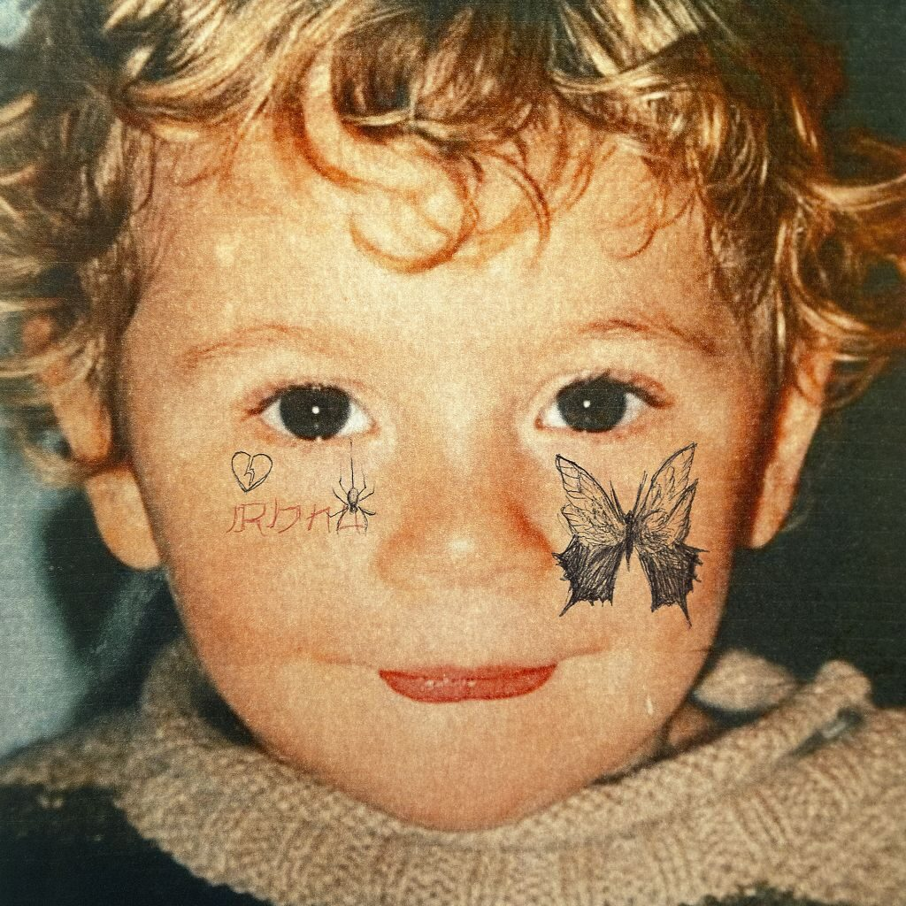
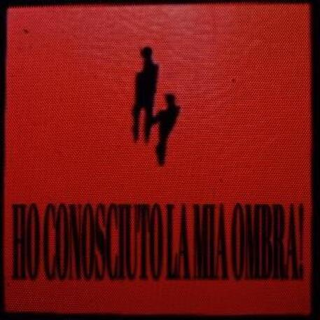
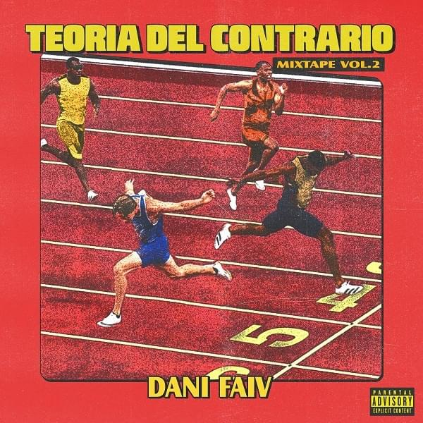

Paolo Belfiore
Ultimo aggiornamento: Oggi
Paolo Belfiore
Ultimo aggiornamento: Oggi
Il brano, interamente prodotto da Thasup, parla di un di uno spaesamento soggettivo che porta alla scoperta dell'ignoto, ovvero ad un modo diverso di guardare il modo attraverso punti di vista differenti. A tutto ciò, Tedua aggiunge un tocco di poeticità in più, a partire dal flow fino all'utilizzo delle immagini utilizzate dall'artista.
Il brano sembrerebbe essere una prefazione del nuovo album, in uscita prossimamente. Attraverso una ballad degli anni '60, Chiello vuol far riflettere sul senso della libertà che spesso viene fuori quando si ha a che fare con qualcosa di nuovo e che spesso acceca. La cosa migliore, quindi, è quella di focalizzarsi sul proprio cammino.
Questo nuovo singolo, oltre che essere un tributo per la città, vuole anche evidenziarne l'evoluzione vissuta attraverso chi la vive, proprio come fosse una storia d'amore fatta da alti e bassi. Si parla della difficoltà di distaccarsi da questo posto che riempie la quotidianità, con immagini dei suoi cieli al tramonto e delle strade che la percorrono.
Il brano, rappresenta il secondo tassello del nuovo album in uscita il prissimo venerdì 14/04. L'artista parla di un'amore impossibile, nero, oscuro come quello che si prova spesso verso qualcuno che non si può amare e tantomeno si può riuscire a spiegarlo. Questa situazione non viene del tutto accettata e lo si può emergere dalla musicalità che ne vengono fuori.
L'album è uscito a 7 anni dalla prima edizione e rappresenta un balzo in avanti date le collaborazioni, il sound e le melodie presenti nel disco. La prima traccia è "Lassu" e parla della scomparsa di una persona cara all'artista, la quale appunto è venuta a mancare. Proprio da questo, ci si avvia ad una teoria del contrario che inzia appunto dalla morte. Le strumentali guidano l'ascoltatore verso un viaggio fatto di emozioni diverse, sprigionate dalle produzioni che uniscono la nuova generazione con quella old school. Questo mix di sonorità rende riduttivo, in parte, il concetto di generi musicali, creando appunto un vero e proprio MixTape.
